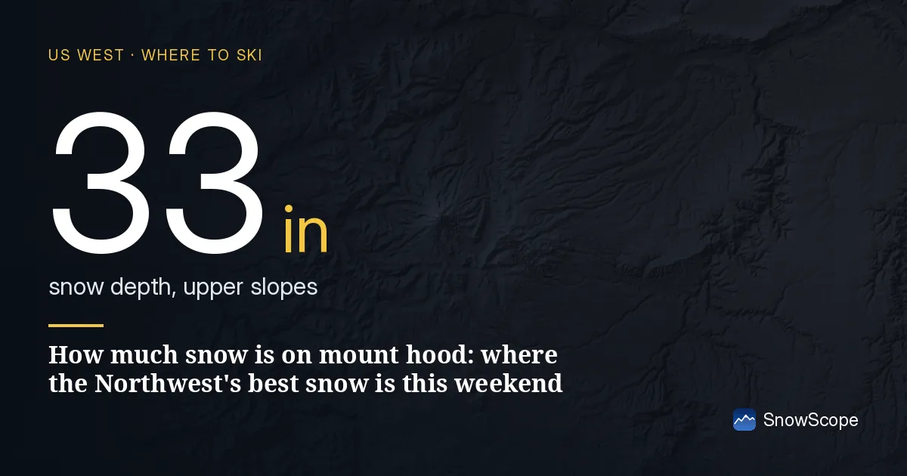
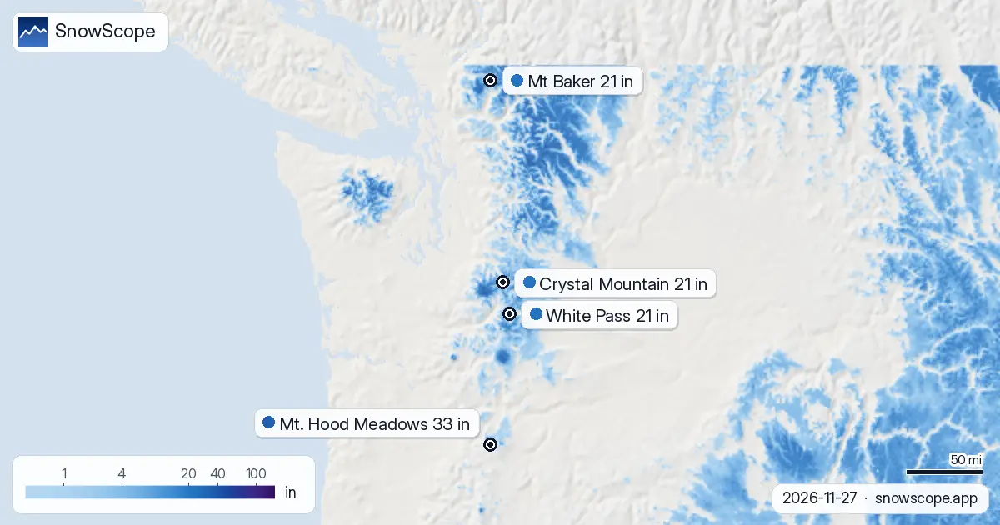
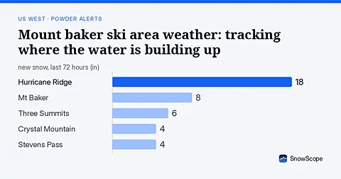

How much snow is on mount hood: where the Northwest's best snow is this weekend
How much snow is on mount hood – Mt. Hood Meadows holds the deepest snow across the US West right now: 84 cm (33 in) on the upper slopes. More snow is coming over the weekend, with the heaviest fall on Sunday, so the mountains will store significantly more water by Monday morning.
See the live snow forecast for Mt. Hood Meadows in the SnowScope appSnow depth, powder alerts and the 3D map, free.
Mt. Hood Meadows leads by a wide margin
Mt. Hood Meadows sits well ahead of the region's other high peaks. At 2,226 m (7,303 ft), its summit holds 84 cm (33 in) of snow today. The next-best resort, Crystal Mountain, has 54 cm (21 in) at 2,072 m (6,798 ft). Mt. Baker and White Pass are also at 54 cm (21 in), but at lower elevations: 1,556 m (5,105 ft) and 1,987 m (6,519 ft) respectively. Snow depth depends on both past storms and altitude, so Mt. Hood Meadows benefits from both: it has received steady falls over the past three days, and its height gives it colder air that preserves the snow.
The water stored in Mt. Hood Meadows' snowpack is already well above what many lowland reservoirs can rely on in late November. The Fifteenmile station, 10.5 km away at 1,820 m (5,971 ft), recorded 15 cm (6 in) on 24 November—a snapshot of how thin snow remains at mid-slope height. The upper mountain tells a very different story.
| Resort | Snow depth | New snow, 72 h | Coming, next days | Top |
|---|---|---|---|---|
| Mt. Hood Meadows | 33 in (84 cm) | 20 in (51 cm) | 14 in (35 cm) | 7,303 ft (2,226 m) |
| Crystal Mountain | 21 in (54 cm) | 25 in (64 cm) | 9 in (24 cm) | 6,798 ft (2,072 m) |
| Mt Baker | 21 in (54 cm) | 25 in (64 cm) | 7 in (18 cm) | 5,105 ft (1,556 m) |
| White Pass | 21 in (54 cm) | 17 in (44 cm) | 10 in (26 cm) | 6,519 ft (1,987 m) |

Sunday brings the heaviest snow
The weekend forecast shows uneven timing. Saturday will be quieter, with only 9 cm (3.5 in) of new snow at Mt. Hood Meadows. Sunday is the main event: 2 cm (0.8 in) on that day alone may sound modest, but the period from Friday to Sunday will add up to 35 cm (14 in) of fresh snow across the three days. Much of that arrives on Sunday. By Monday, the snowpack will store measurably more water—important for the region's spring melt and stream flow.
At Crystal Mountain, White Pass, and Mt. Baker, the snow arriving this weekend is lighter: 24 cm (9 in), 26 cm (10 in), and 18 cm (7 in) respectively over the same period. These resorts sit lower and face warmer air at their base elevations, which affects how much of the incoming precipitation reaches the ground as snow rather than rain.
Rain-snow line matters this weekend
Saturday's freezing level at Mt. Hood Meadows ranges from 920 m to 3,120 m (3,018 to 10,236 ft). That wide swing means rain may fall on the upper slopes early in the day before cold air moves in. The base at 1,380 m (4,528 ft) sits below the morning freezing level, so Saturday morning may bring rain to the lower mountain.
Sunday is safer for snow throughout the day: the freezing level only ranges between 2,140 m and 2,910 m (7,021 to 9,547 ft), so rain is unlikely above 2,000 m (6,562 ft). Mt. Baker faces the smallest freezing level on Sunday—just 1,320 m to 2,330 m (4,331 to 7,644 ft)—meaning rain will reach further up its slopes and less of the incoming water stays as snow.
Early-season snow is thin at mid-heights
At Mt. Hood Meadows' mid-slope station (1,803 m / 5,912 ft), only 13 cm (5 in) is forecast; at the base, the SnowScope map shows no snow at all. This is typical for late November: snow is concentrated on the highest terrain, and the lower mountain is still marginal. At Crystal Mountain's mid-height (1,708 m / 5,603 ft), 27 cm (11 in) is forecast—better than Mt. Hood Meadows at the same relative height, but still a thin layer that cannot hide rocks and rough ground.
If you ski off-piste this weekend, stay high and on north-facing slopes where snow lasts longest and settles more reliably. The official avalanche bulletin is essential reading before leaving the piste. Early-season snowpacks are fragile: a thin layer over old ground or rock can slide or give way unexpectedly.
Weekend choice: go high, check the resort first
Mt. Hood Meadows is the obvious choice if you want the best snow and the most reliable skiing this weekend. The upper mountain is in the strongest position across the region. Crystal Mountain and White Pass offer an alternative if Mt. Hood Meadows' lifts are busy or if you prefer lower elevations and shorter drives.
Before you leave, check the resort website for which lifts are open and which slopes are groomed. Early-season operations are often limited, and high-altitude lifts can close in cold or windy weather. The incoming storm is moisture-rich and will add to the mountains' water stores, but the base of each resort will still be thin. Plan to ski groomed terrain.
Tips for skiers
- Mt. Hood Meadows' summit holds 84 cm and will gain about 35 cm more by Sunday. Drive early Saturday if that resort is your target, before afternoon rain raises the freezing level.
- Sunday's snow is heavier than Saturday's; if the weather improves Sunday afternoon, that is a better time to ski than Saturday morning.
- Mid-slope snow remains thin (13–27 cm at mid-elevations). Stay on groomed runs and check the official avalanche bulletin if you venture off-piste.
- Freezing levels rise above 2,400 m on Saturday afternoon at Mt. Hood Meadows; rain may touch the upper slopes. Sunday is safer for snow throughout the day.
- Check your chosen resort's website for lift closures and grooming reports before heading out. Early-season resorts often run limited operations.
About these numbers
Resort snow depths are the deepest snow on the resort's upper slopes on the date shown; they are estimates for an area, not a measurement at one point. Forecasts can change. Always read the official avalanche bulletin before going off-piste.
Official avalanche bulletins: avalanche.org
Cite this report
For research, teaching or the press: the numbers and charts are free to reuse under CC BY 4.0 with this citation.
SnowScope (2026), How much snow is on mount hood: where the Northwest's best snow is this weekend, https://snowscope.app/blog/en/2026/11/us-west-where-to-ski-this-weekend-27-november-2026.html, accessed 2026-11-27
SnowScope (Atlas Labs). (2026, November 27). How much snow is on mount hood: where the Northwest's best snow is this weekend. SnowScope snow reports. https://snowscope.app/blog/en/2026/11/us-west-where-to-ski-this-weekend-27-november-2026.html
BibTeX
@misc{snowscope2026uswestwheretoskithisweek,
author = {{SnowScope (Atlas Labs)}},
title = {How much snow is on mount hood: where the Northwest's best snow is this weekend},
year = {2026},
month = nov,
howpublished = {\url{https://snowscope.app/blog/en/2026/11/us-west-where-to-ski-this-weekend-27-november-2026.html}},
note = {Published 2026-11-27 14:18 UTC; accessed 2026-11-27}
}· CC BY 4.0 · Methods, data and tools →
Mt. Hood Meadows: snow and temperature by height, this winter vs last (tools) →
Follow Mt. Hood Meadows
Free: a message when fresh snow is coming, and the forecast every morning.
More snow reports

White Pass rewards early bookings on weekdays. By mid-December, mid-mountain holds 40 in (102 cm) in a typical year. Data from 13 November 2026.

Mt. Baker in December: 46 in (116 cm) of snow at mid-mountain on a typical 15 December, and a $98.80 Monday-to-Thursday ticket sold on the day only.

Mt Baker sits at 28 cm on upper slopes, right where November typically sees snow at this height. Fresh powder is arriving this week, especially Thursday.